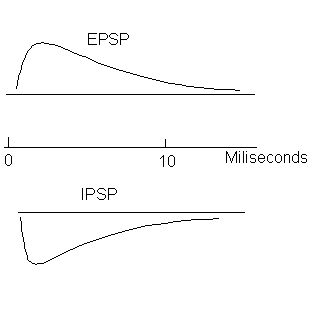
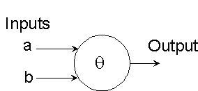
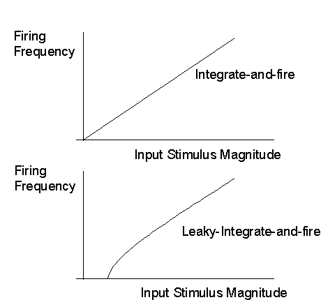
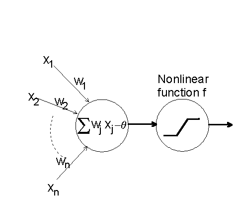
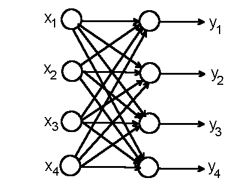

Synaptic junction has two sides
Presynaptic --- receiving an action potential from the driving cell
Postsynaptic --- connect to the dendrite of the (postsynaptic) driven cell
| Excitatory (make the cell more likely to fire) | |
| Inhibitory (make the cell less likely to fire) |

Interaction of synaptic potentials
What happens when more than one synapse becomes active at the same time?
In some cases, the resulting EPSPs or IPSPs come close to adding their values algebraically (linear superpostion) --- This simple approximation is used in most neural network models.
Slow potential theory of the neuron
A cell with many inputs may be receiving inputs constantly. Both spatial and temporal integration exist.
| The extent of dendritic spread allows significant spatial integration. | |
| The integrated membrane potential at the cell body varies slowly in a slow potential, allowing input occuring at different times to add. This is the reverse of voltage-to-frequency converter; it integrates spikes to slow potential. When this slow potential exceeds a threshold, it generates a spike which is transmitted down the axon to other cells. |
McCulloch-Pitts's neurons
It is a discrete (binary) signals, discrete time.
At each time step, the neuron responds to the activity of its synapses. If no inhibitory synapses are active, the neuron adds its synaptic inputs and checks to see if the sum meets or exceeds its threshold. If it does, the neuron becomes active. If not, the neuron is inactive.

Given two excitatory inputs, a and b, the unit will perform Inclusive Or, if the threshold is 1
a b (Input at t) Output (at t+1)
0
0
0
1
0
1
0
1
1
1
1
1
If the threshold is 2, the unit will perform a AND b.
Any finite logical expression can be realized by McCulloch-Pitts neurons.
---> This gave rise to the idea that the brain was very much like a digital computer.
The integrate-and-fire model of the neuron
Neurons often encode information about stimulus intensity in terms of rate of firing. Let s be the stimulus (assumed to be constant), then the frequency of firing, f, is simply given by
f = s/q, where q is the threshold.
A more realistic model is the leaky-integrate-and-fire model, which assumes the decay of membrane potential due to leakage. This leads to threshold behavior of the response

There should also be a limit in the firing frequency
The generic connectionist model of the neuron

| Stage 1: u = linear weighted sum of inputs | |
| Stage 2: Non-linear input-output function, a popular choice is the sigmoid function |
output=f(u) = 1/(1+e-u)
McCulloch-Pitts input-output function is a step function.
Typically we write
u= Sj=1n wj xj - q = Sj=1n+1 wj xj ,
with xn+1=1, and wn+1= - q --- additional input with a special weight connected to a constant input values.
When these neurons are connected we have a neural network model.
Here is a simple two-layer neural network
